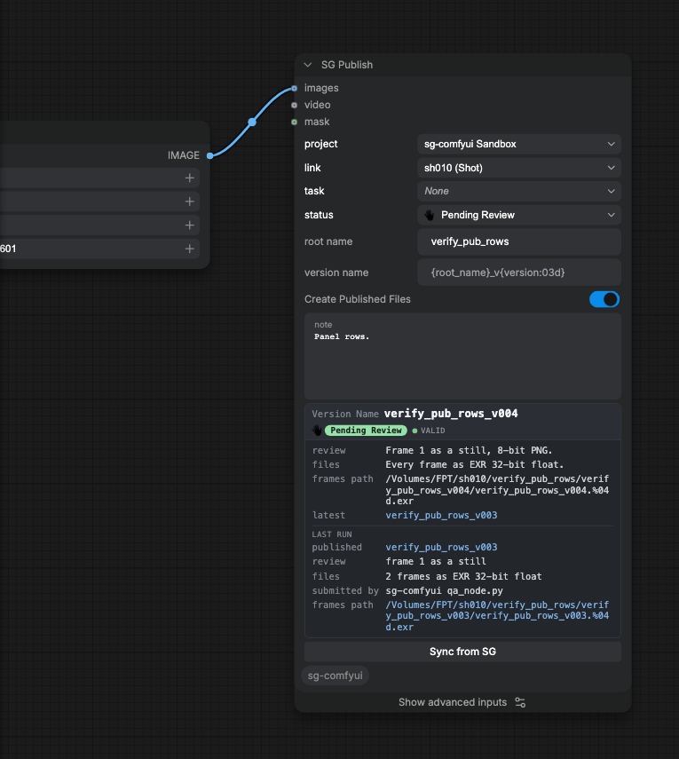
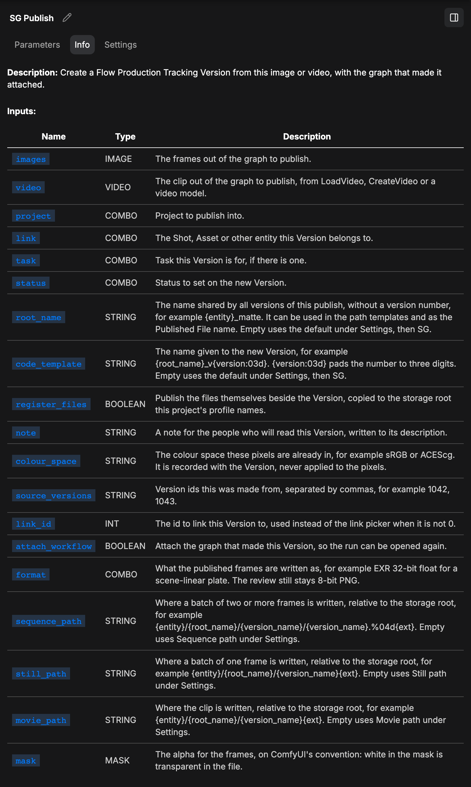
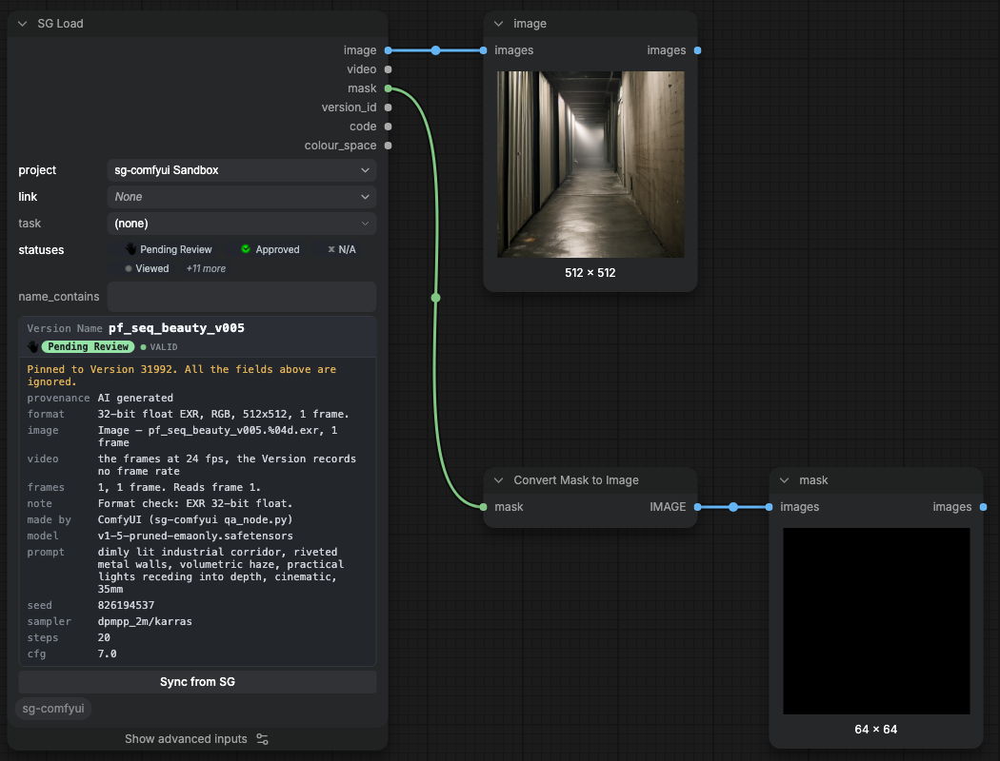
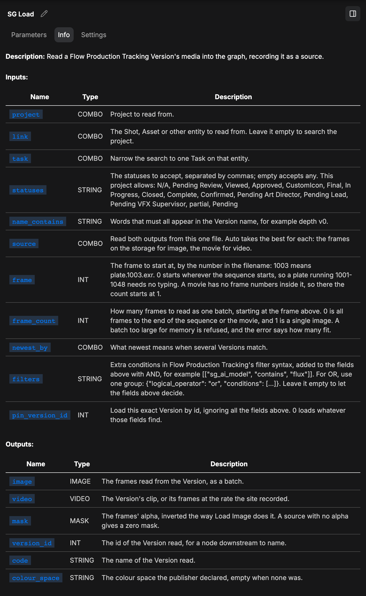

The two nodes
SG Publish records a generation. SG Load reads one back. Nothing here generates, encodes or decodes.
SG Publish
- Creates a Version linked to a Shot, an Asset, or whatever your site links Versions to.
- Reads project, link, Task and status live from your site.
- Writes nine typed fields: generator, model, prompt, negative prompt, seed, sampler, steps, CFG, lineage.
- Attaches the workflow and a
.provenance.jsonrecord. - Uploads review media that plays in a browser.
- Registers the frames or the movie as PublishedFiles when Create Published Files is ticked.
- Writes frames as 8-bit PNG, 16-bit PNG or EXR 32-bit float, picked on the format widget.


SG Load
- Finds a Version by project, link, Task, status and name.
pin_version_idtakes an id instead. - Outputs
image,video,mask,version_id,code,colour_space. - Reads 16-bit PNG and EXR at full precision.
- Records the Version it read on anything published downstream.


In the editor
- Settings, then SG: site address, sign-in, project, publish defaults.
- SG Site Setup, in that group: counts the nine provenance fields on the site, creates the missing ones.
- Sync from SG on a node forces a read past the 600 second lookup cache.
- Typing
{in root name or version name offers a Default row that writes the Settings template into the field.
Known limits
- A loader inside a ComfyUI subgraph is replaced there, not promoted to the top level.
- A zip uploaded to a Version is not unpacked. SG Load returns it unchanged.
The output order is frozen from the first release, like the widget order. See the provenance fields for what SG Publish writes.